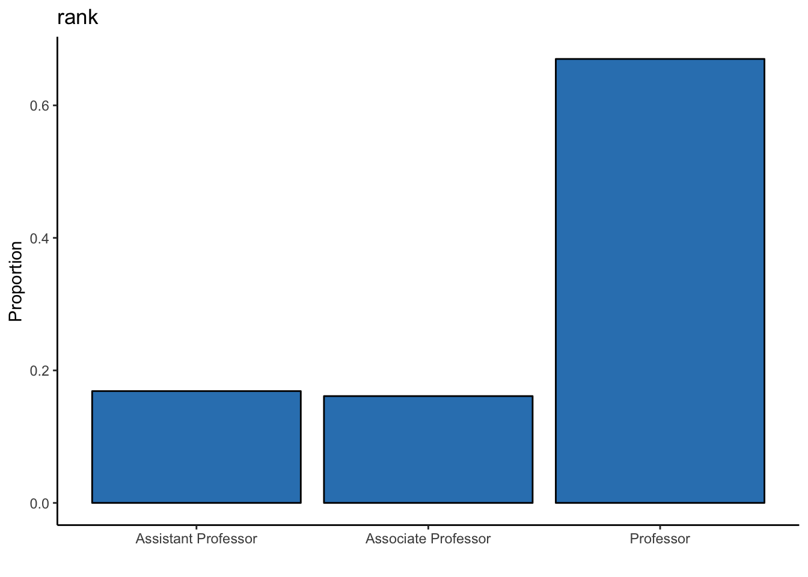
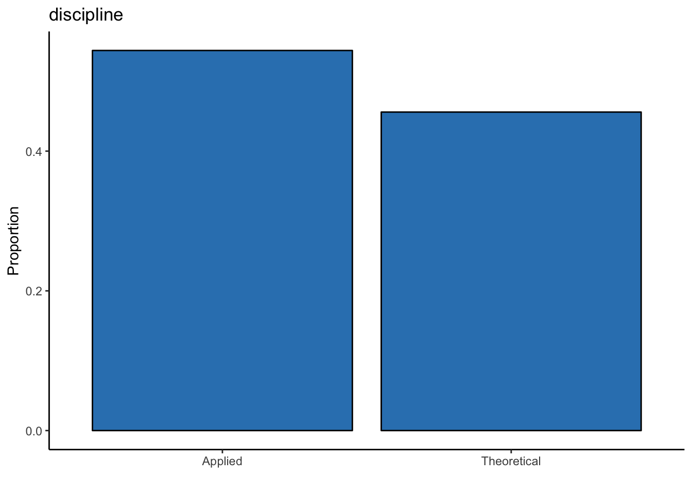
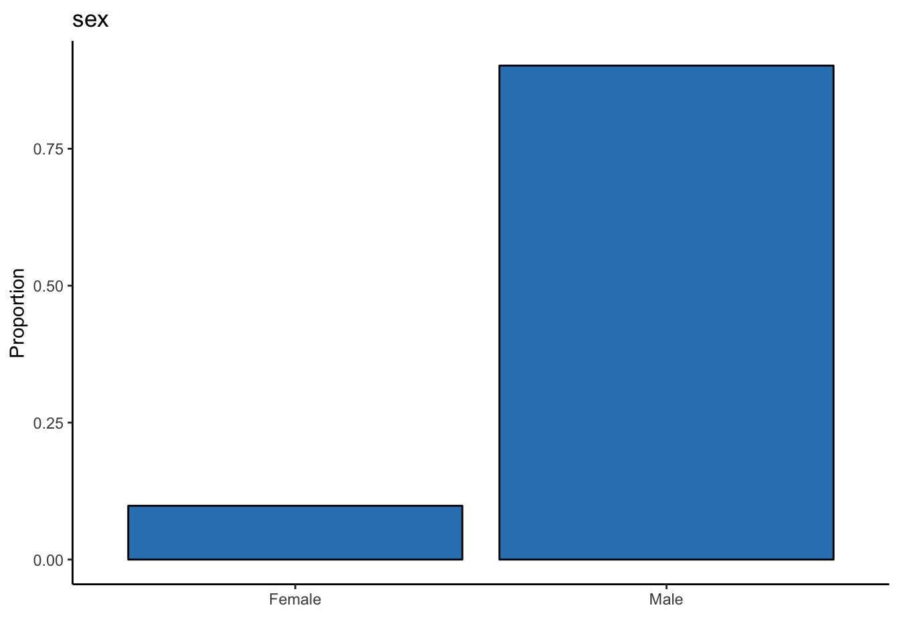
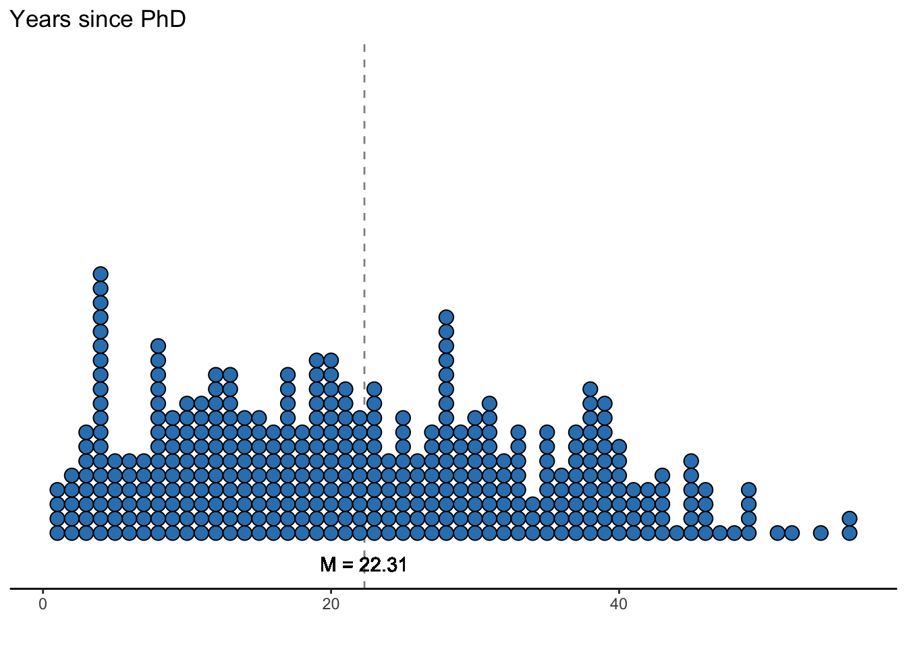
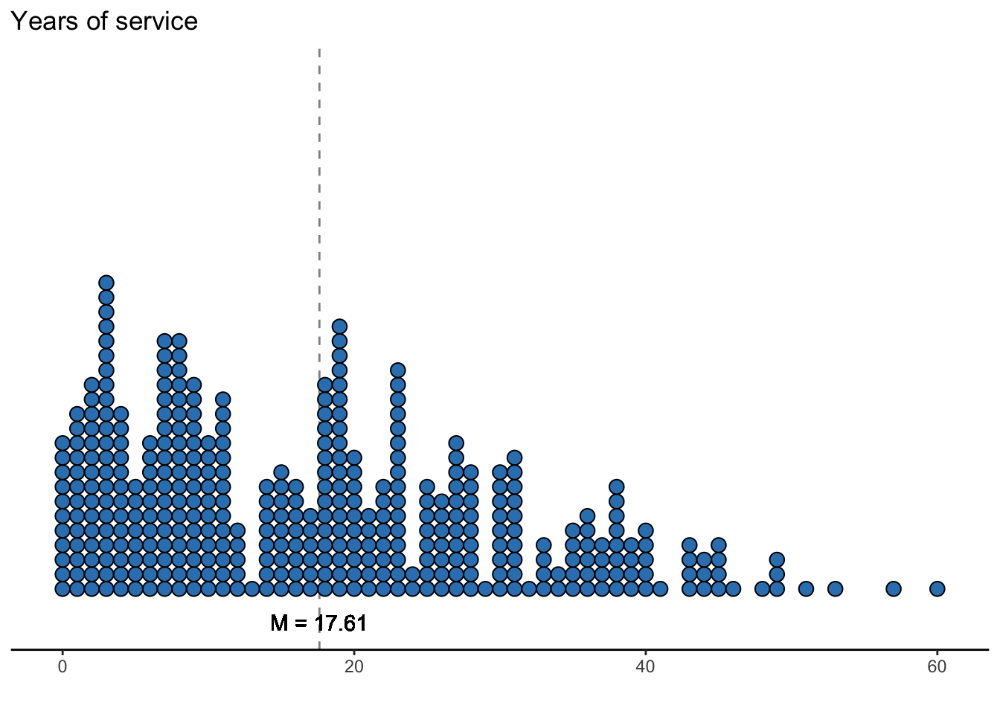
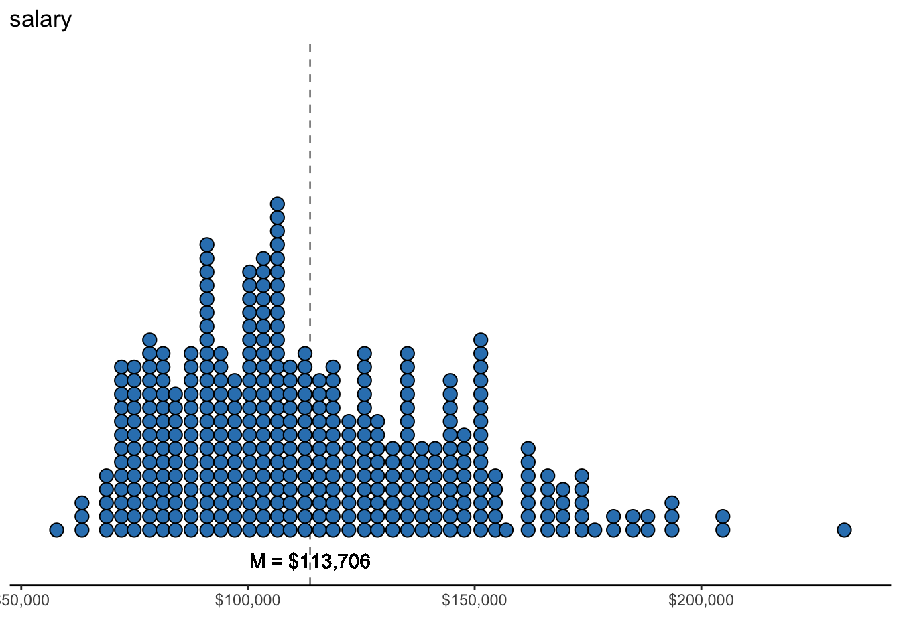
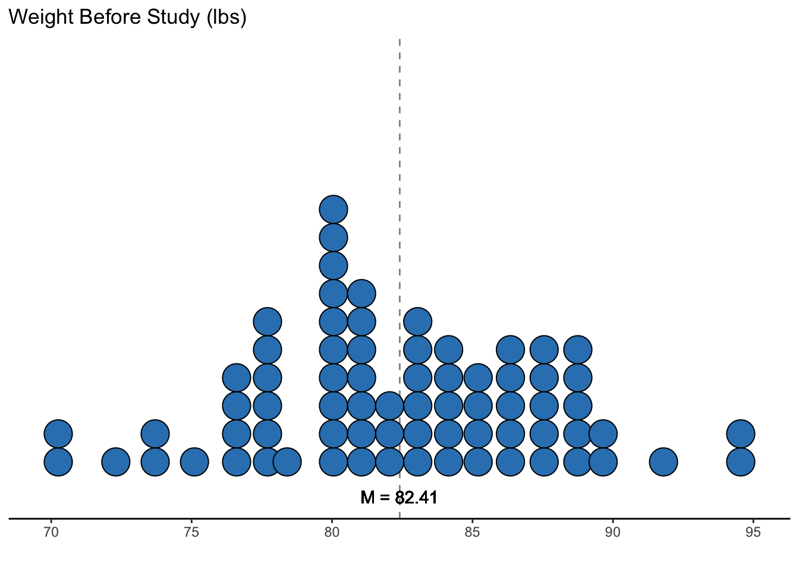
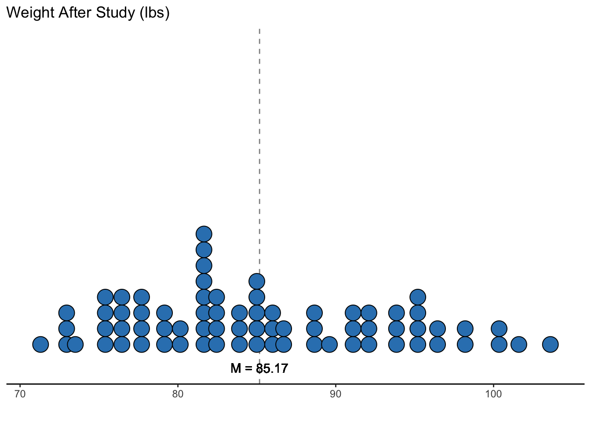

Chapter 4 Datasets
Below are two public (open-access) and real datasets that we will use for the analyses. For each dataset, you will find its description, minor data wrangling (or data manipulation), and descriptive statistics in both numeric and visual formats.
4.1 Salaries Dataset
One of the datasets that we’ll use is the Salaries dataset within the carData package. The dataset consists of nine-month salaries collected from 397 collegiate professors in the U.S. during 2008 to 2009. In addition to salaries, the professor’s rank, sex, discipline, years since Ph.D., and years of service was also collected. Thus, there is a total of 6 variables, which are described below.
| Variable | Variable Type | Description |
|---|---|---|
| rank | Categorical | Professor’s rank of either assistant professor, associate professor, or professor |
| discipline | Categorical | Type of department the professor works in, either applied or theoretical |
| yrs.since.phd | Continuous | Number of years since the professor has obtained their PhD |
| yrs.service | Continuous | Number of years the professor has served the department and/or university |
| sex | Categorical | Professor’s sex of either male or female |
| salary | Continuous | Professor’s nine-month salary (USD) |
4.1.1 Data Wrangling
Before running these analyses within the GLM context, let’s clean up the dataset so that it’s readable for us rather than computers.
# spell out rank variables
# rename discipline variables to its meaningful name
# ensure both rank and discipline are factors
datasetSalaries <- datasetSalaries %>%
mutate(
rank = case_when(
rank == "AssocProf" ~ "Associate Professor",
rank == "AsstProf" ~ "Assistant Professor",
rank == "Prof" ~ "Professor"
),
discipline = case_when(
discipline == "A" ~ "Theoretical",
discipline == "B" ~ "Applied"
)
) %>%
mutate(
rank = as.factor(rank),
discipline = as.factor(discipline)
)4.1.2 Descriptive Statistics
It’s also always a good idea to examine the data numerically and visually. Let’s first look at the categorical variables then the continuous variables.
4.1.2.1 Categorical Variables
| rank | freq |
|---|---|
| Assistant Professor | 67 |
| Associate Professor | 64 |
| Professor | 266 |
ggplot(datasetSalaries, aes(rank)) +
geom_bar(aes(y = stat(count) / sum(stat(count))), color = "black", fill = "#3182bd") +
theme_classic() +
labs(y = "Proportion", x = "", title = "rank")
In this dataset, there are a lot more professors than assistant and associate professors combined.
| discipline | freq |
|---|---|
| Applied | 216 |
| Theoretical | 181 |
ggplot(datasetSalaries, aes(discipline)) +
geom_bar(aes(y = stat(count) / sum(stat(count))), color = "black", fill = "#3182bd") +
theme_classic() +
labs(y = "Proportion", x = "", title = "discipline")
There are slightly more professors within the applied than the theoretical discipline (i.e., 35 more).
| sex | freq |
|---|---|
| Female | 39 |
| Male | 358 |
ggplot(datasetSalaries, aes(sex)) +
geom_bar(aes(y = stat(count) / sum(stat(count))), color = "black", fill = "#3182bd") +
theme_classic() +
labs(y = "Proportion", x = "", title = "sex")
There is a little over 9x as many male professors as there are female professors.
4.1.2.2 Continuous Variables
datasetSalaries %>%
select(yrs.since.phd, yrs.service, salary) %>%
describe(.) %>%
select(-n, -vars, -trimmed, -mad, -range) %>%
round(., 2) %>%
kable(.)| mean | sd | median | min | max | skew | kurtosis | se | |
|---|---|---|---|---|---|---|---|---|
| yrs.since.phd | 22.31 | 12.89 | 21 | 1 | 56 | 0.30 | -0.81 | 0.65 |
| yrs.service | 17.61 | 13.01 | 16 | 0 | 60 | 0.65 | -0.34 | 0.65 |
| salary | 113706.46 | 30289.04 | 107300 | 57800 | 231545 | 0.71 | 0.18 | 1520.16 |
ggplot(datasetSalaries, aes(yrs.since.phd)) +
geom_vline(
xintercept = describe(datasetSalaries)["yrs.since.phd", "mean"],
alpha = .5,
linetype = "dashed"
) +
geom_dotplot(binwidth = 1, fill = "#3182bd") +
geom_text(aes(
x = describe(datasetSalaries)["yrs.since.phd", "mean"],
label = paste("M =", round(describe(datasetSalaries)["yrs.since.phd", "mean"], 2)),
y = -.05
), angle = 0) +
theme_classic() +
scale_y_continuous(NULL, breaks = NULL) +
labs(x = "", y = "Frequency", title = "Years since PhD")
On average, professors have had their Ph.D. for about 22 years.
ggplot(datasetSalaries, aes(yrs.service)) +
geom_vline(
xintercept = describe(datasetSalaries)["yrs.service", "mean"],
alpha = .5,
linetype = "dashed"
) +
geom_dotplot(binwidth = 1, fill = "#3182bd") +
geom_text(aes(
x = describe(datasetSalaries)["yrs.service", "mean"],
label = paste("M =", round(describe(datasetSalaries)["yrs.service", "mean"], 2)),
y = -.05
), angle = 0) +
theme_classic() +
scale_y_continuous(NULL, breaks = NULL) +
labs(x = "", y = "Frequency", title = "Years of service")
On average, professors have provided a service to either the department or university for about 17 years and 7 months.
ggplot(datasetSalaries, aes(salary)) +
geom_vline(
xintercept = describe(datasetSalaries)["salary", "mean"],
alpha = .5,
linetype = "dashed"
) +
geom_dotplot(binwidth = 3000, fill = "#3182bd") +
geom_text(aes(
x = describe(datasetSalaries)["salary", "mean"],
label = paste("M =", scales::dollar(round(describe(datasetSalaries)["salary", "mean"], 2))),
y = -.05
), angle = 0) +
theme_classic() +
scale_y_continuous(NULL, breaks = NULL) +
scale_x_continuous(labels = scales::dollar) +
labs(x = "", y = "Frequency", title = "salary")
On average, a professor’s 9-month annual income is $113,706.46.
4.2 Anorexia Dataset
Another dataset that we’ll use is the anorexia dataset within the MASS package. The dataset consists of the weight (in lbs) of 72 female patients with anorexia before and after either cognitive behavioral therapy, family therapy, or no therapy (control condition).
| Variable | Variable Type | Description |
|---|---|---|
| Treatment | Categorical | Treatment of female patient with anorexia, either cognitive behavioral therapy (CBT), family therapy (FT), or no therepy (CONT) |
| PreWeight | Continuous | Weight of female patient with anorexia before treatment in lbs. |
| PostWeight | Continuous | Weight of female patient with anorexia after treatment in lbs. |
4.2.1 Data Wrangling
Again, we can make the dataset slightly more readable for us.
# spell out variable names
# re-order levels to be CBT, FT, then Cont rather than alphabetical order
datasetAnorexia <- datasetAnorexia %>%
mutate(
Treatment = Treat,
PreWeight = Prewt,
PostWeight = Postwt,
Treatment = case_when(
Treatment == "CBT" ~ "CBT",
Treatment == "FT" ~ "FT",
Treatment == "Cont" ~ "Control"
),
Treatment = factor(Treatment, levels = c("CBT", "FT", "Control"))
)4.2.2 Descriptive Statistics
4.2.2.1 Categorical Variables
| Treatment | freq |
|---|---|
| CBT | 29 |
| FT | 17 |
| Control | 26 |
ggplot(datasetAnorexia, aes(Treatment)) +
geom_bar(aes(y = stat(count) / sum(stat(count))), color = "black", fill = "#3182bd") +
theme_classic() +
labs(y = "Proportion", x = "", title = "Treatment")
There are more participants within the CBT condition compared to either the FT condition or control group.
4.2.2.2 Continuous Variables
datasetAnorexia %>%
select(PreWeight, PostWeight) %>%
describe(.) %>%
select(-vars, -trimmed, -mad, -range) %>%
round(., 2) %>%
kable()| n | mean | sd | median | min | max | skew | kurtosis | se | |
|---|---|---|---|---|---|---|---|---|---|
| PreWeight | 72 | 82.41 | 5.18 | 82.30 | 70.0 | 94.9 | -0.05 | -0.16 | 0.61 |
| PostWeight | 72 | 85.17 | 8.04 | 84.05 | 71.3 | 103.6 | 0.36 | -0.81 | 0.95 |
ggplot(datasetAnorexia, aes(PreWeight)) +
geom_vline(
xintercept = describe(datasetAnorexia)["PreWeight", "mean"],
alpha = .5,
linetype = "dashed"
) +
geom_dotplot(binwidth = 1, fill = "#3182bd") +
geom_text(aes(
x = describe(datasetAnorexia)["PreWeight", "mean"],
label = paste("M =", round(describe(datasetAnorexia)["PreWeight", "mean"], 2)),
y = -.05
),
angle = 0
) +
theme_classic() +
scale_y_continuous(NULL, breaks = NULL) +
labs(x = "", y = "Frequency", title = "Weight Before Study (lbs)")
On average, women with anorexia before treatment weighed 82.41 lbs.
ggplot(datasetAnorexia, aes(PostWeight)) +
geom_vline(
xintercept = describe(datasetAnorexia)["PostWeight", "mean"],
alpha = .5,
linetype = "dashed"
) +
geom_dotplot(binwidth = 1, fill = "#3182bd") +
geom_text(aes(
x = describe(datasetAnorexia)["PostWeight", "mean"],
label = paste("M =", round(describe(datasetAnorexia)["PostWeight", "mean"], 2)),
y = -.05
),
angle = 0
) +
theme_classic() +
scale_y_continuous(NULL, breaks = NULL) +
labs(x = "", y = "Frequency", title = "Weight After Study (lbs)")
On average, women with anorexia after treatment weighed 85.17 lbs, which is about a 2.76 lbs weight gain compared to before treatment.